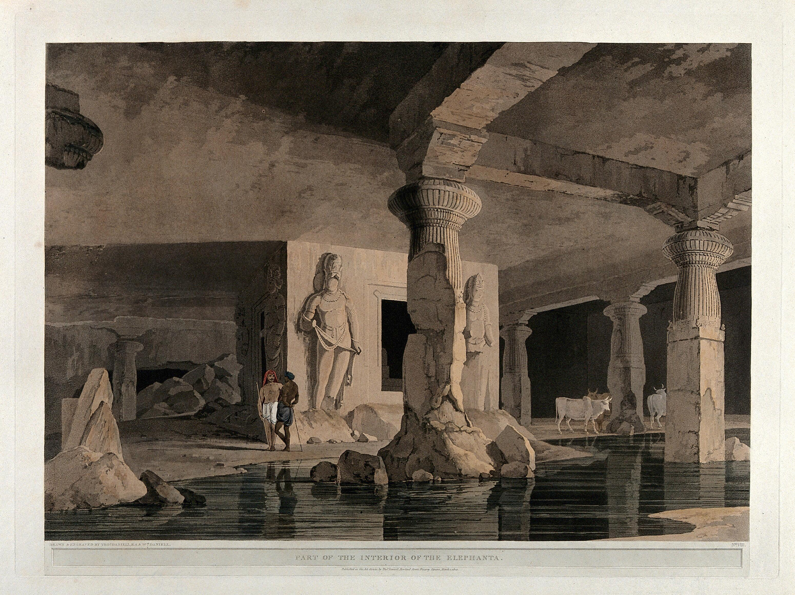
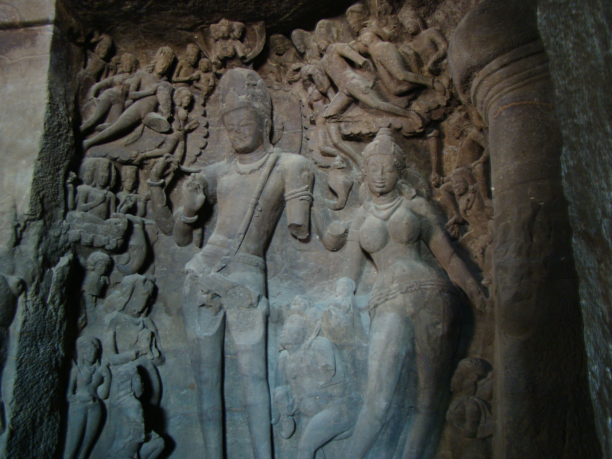
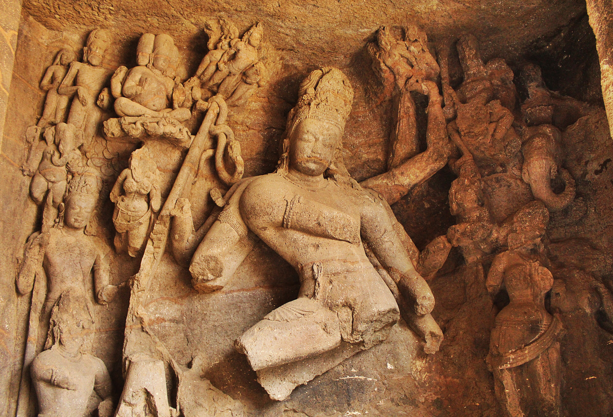
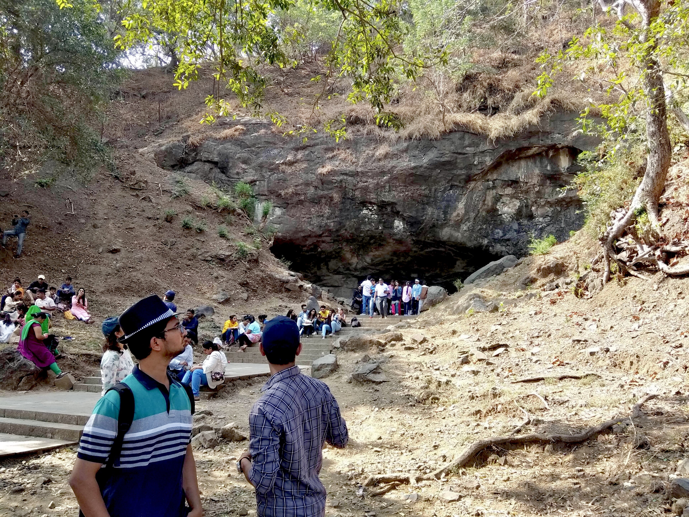
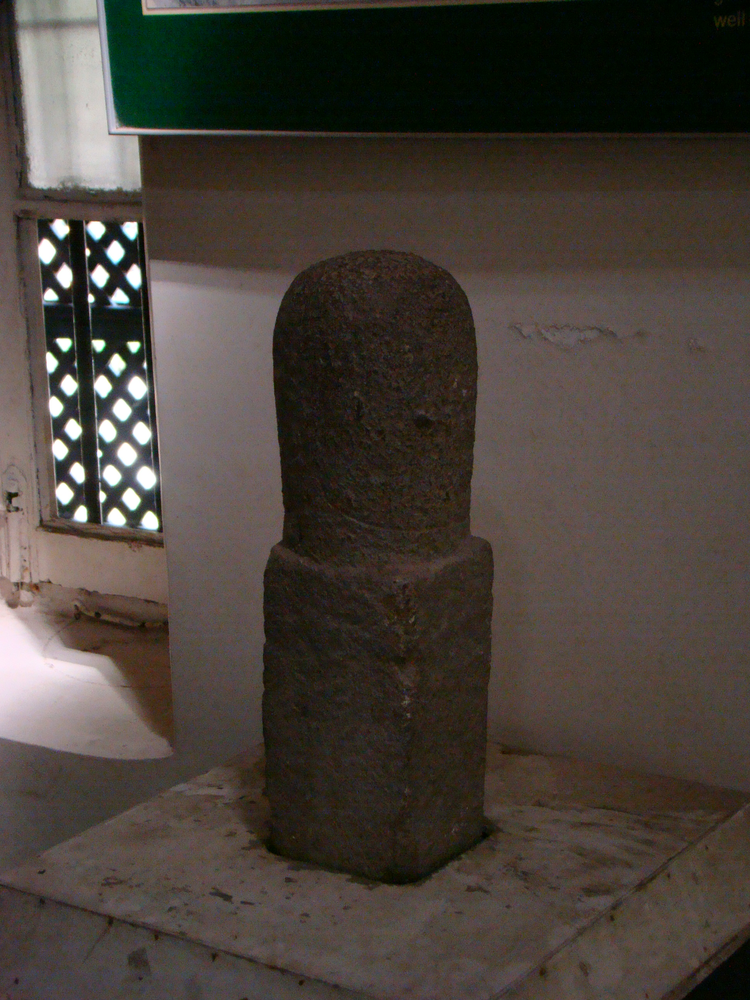
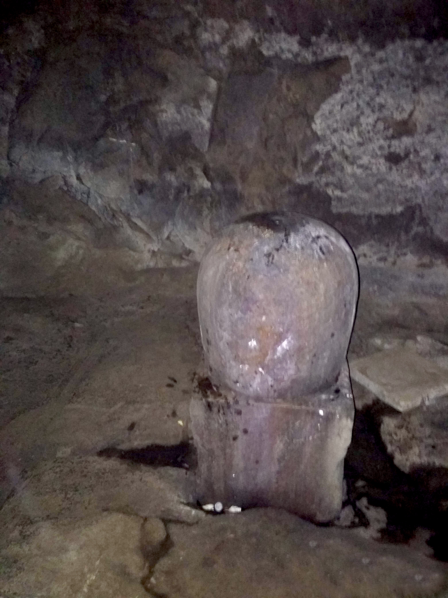
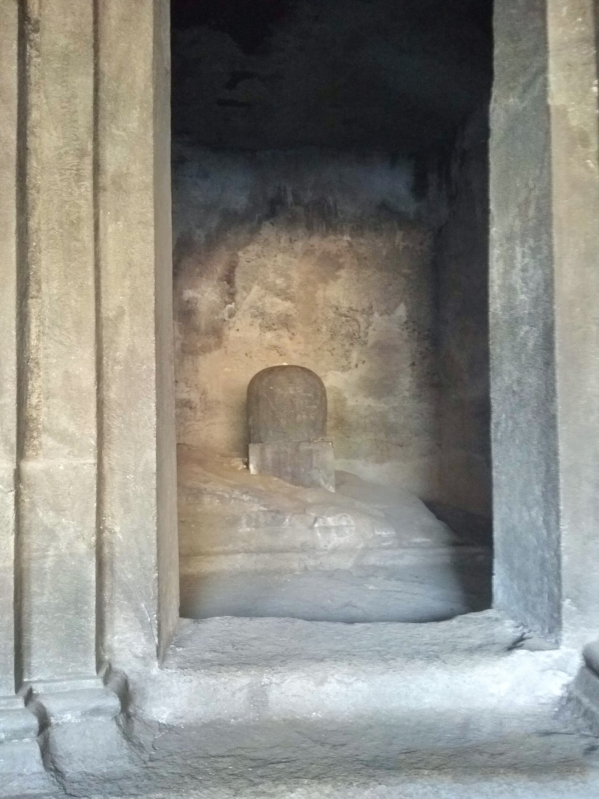

📍 Location: Gharapuri Island, Mumbai Harbour, Maharashtra, India
📅 Period: 6th–8th century CE (primarily mid-6th century)
🏷️ Category: Cultural
⚠️ Status: UNESCO World Heritage Site (1987)
📏 Significance: Masterpiece of rock-cut architecture; supreme expression of Shaivite sculpture; the monumental Trimurti; testimony to early medieval Indian artistry and maritime trade.
The ferry pulls away from the Gateway of India, and the city dissolves behind you in a haze of diesel and salt. For an hour, the boat churns across Mumbai Harbour, past fishing trawlers and oil tankers, until a low green island rises from the water. This is Gharapuri — the "city of caves" — a place where the Arabian Sea has been worrying at the coastline for millennia. The island is small, barely four square kilometres, and most of it is a dense tangle of mangroves and palms. But beneath its surface, carved into a hill of solid basalt, lies one of the most extraordinary achievements of ancient Indian art: the Elephanta Caves.

Nothing prepares you for the moment you climb the stone steps and step into darkness. The air inside the caves is cool and mineral, thick with the smell of damp rock. Light filters in from the east, falling in pale columns across the floor. And then, as your eyes adjust, the walls begin to move. Gods emerge from the shadow — Shiva as creator, Shiva as destroyer, Shiva as the cosmic dancer. The figures are colossal, some more than five metres tall, their faces serene, their bodies fluid with a grace that seems impossible given the hardness of the stone. This is not decoration. This is theology carved in basalt.
The Elephanta Caves are not a single cave but a complex of seven, of which five are Hindu and two are Buddhist. The main cave, the Great Cave, is the centrepiece — a vast excavated temple dedicated to Shiva, with a pillared hall, three entrances, and a sanctum that houses a lingam. It was carved over centuries, beginning in the mid-sixth century CE, when the Kalachuri dynasty ruled this stretch of the western coast. The Portuguese, who arrived in the sixteenth century, called the island "Elephanta" after a colossal stone elephant they found near the shore. That elephant now stands in the garden of the Dr. Bhau Daji Lad Museum in Mumbai, a displaced sentinel far from its island home.
The caves have been a place of pilgrimage, conquest, and wonder for nearly fifteen hundred years. They have survived the rise and fall of empires, the depredations of colonial soldiers, and the slow erosion of salt and monsoon. Today, they are a UNESCO World Heritage Site and one of India's most visited monuments. But the crowds and the ferries and the souvenir stalls cannot diminish the strange, brooding power of the place. The Elephanta Caves are not a ruin. They are a living sanctuary, a place where stone and spirit have been fused into something that feels almost alive.
The origins of the Elephanta Caves are shrouded in the kind of silence that stone keeps well. There are no inscriptions, no foundation tablets, no names of patrons or architects. What we know comes from stylistic analysis, from the accounts of foreign travellers, and from the slow, patient work of archaeologists who have pieced together the island's history from fragments.

The most widely accepted dating places the construction of the Great Cave in the mid-sixth century CE, during the reign of the Kalachuri dynasty, specifically under King Krishnaraja (c. 550–575 CE). The Kalachuris were a powerful dynasty that controlled the Konkan coast and the Deccan, and they were great patrons of Shaivism. The caves at Elephanta share stylistic affinities with the rock-cut temples at Ellora and Ajanta, and with the structural temples of the Badami Chalukyas. But the Elephanta caves are not simply a provincial imitation. They represent a distinct and highly accomplished school of sculpture, one that combines the elegance of the Gupta tradition with a new, more robust and dramatic energy.
The island of Gharapuri was not always a place of caves. Before the Kalachuris, it was a trading post, a stopover for ships carrying goods between the ports of the Konkan and the markets of the Deccan. The island's strategic location at the mouth of Mumbai Harbour made it a natural anchorage. Coins and pottery from the Satavahana period (c. 1st century BCE–2nd century CE) have been found here, suggesting a long history of settlement. The caves, however, were something new — an attempt to create a sacred landscape that would rival the great temple cities of the mainland.
The construction of the Great Cave was a monumental undertaking. The builders did not build up; they carved down. They began at the top of the hill and worked their way downward, removing tonnes of basalt to create a series of interlocking chambers. The scale of the excavation is staggering. The main hall alone measures roughly 39 metres square, with a ceiling supported by rows of massive pillars. The sanctum, the garbhagriha, is a smaller chamber at the western end, housing the lingam. The entire complex was carved from a single rock, a feat that required extraordinary planning, precision, and manpower.
Who were the artists? We do not know their names. But we know they were masters. The sculpture at Elephanta is characterised by its monumental scale, its fluid lines, and its profound emotional depth. The figures are not static; they seem to move, to breathe, to inhabit the space. The famous Trimurti — the three-headed bust of Shiva — is a case in point. It is a single block of stone, over five metres high, depicting Shiva as the creator, the preserver, and the destroyer. The central face is serene, the right face is fierce, and the left face is gentle. The three faces are not separate; they are aspects of a single, indivisible divinity. It is one of the most powerful images in Indian art, and it has been compared to the great sculptures of ancient Greece and Egypt.
The caves were not built in a single burst of activity. They were expanded and embellished over several centuries, with additions made by later dynasties, including the Rashtrakutas and the Silaharas. The Buddhist caves, which are smaller and less elaborate, may date to a slightly later period, reflecting the coexistence of Hinduism and Buddhism on the island. By the tenth century, the caves were a thriving pilgrimage centre, attracting devotees from across the region.
The arrival of the Portuguese in the sixteenth century marked the beginning of a long decline. The Portuguese, who established a trading post on the island, used the caves as a quarry. They broke up sculptures for building material, used the caves for target practice, and carted off the great stone elephant. The island's population dwindled, and the caves were gradually reclaimed by the jungle. It was not until the nineteenth century, under British rule, that the caves were rediscovered and restored. The first systematic survey was conducted in the 1860s, and the caves were opened to visitors in the early twentieth century.
The Elephanta Caves are a symphony of stone, a complex of chambers and corridors that unfold in a carefully orchestrated sequence. The main cave, the Great Cave, is the heart of the complex. Its entrance is flanked by two massive pillars, and the doorway is guarded by sculptures of river goddesses and dwarfish attendants. Inside, the hall is a forest of pillars — twenty-six in total — arranged in a grid that supports the ceiling. The pillars are not uniform; they vary in height and thickness, creating a sense of rhythm and movement. The capitals are carved with lotus motifs and cushion-like shapes, a hallmark of early Chalukyan architecture.

The walls of the Great Cave are covered with a series of monumental relief panels, each depicting a different aspect of Shiva. To the north, there is the famous panel of Shiva as Nataraja, the cosmic dancer. The figure is caught mid-step, his body twisted in a graceful curve, his arms raised in a gesture of creation and destruction. The panel is badly damaged — the Portuguese are said to have used it for target practice — but the dynamism of the pose is still palpable.
To the east, there is the panel of Shiva as Ardhanarishvara, the lord who is half woman. The figure is split down the middle: the right side is male, with a muscular chest and a coiled snake; the left side is female, with a rounded breast and a flowing skirt. The image is a profound statement of the unity of opposites, of the male and female principles that together constitute the divine. The carving is delicate, almost tender, and it is considered one of the finest examples of its kind in India.
The most famous panel, however, is the Trimurti, located on the south wall. The three-headed bust is a masterpiece of composition and execution. The central face, representing Shiva as the preserver, is calm and meditative, with eyes closed and a slight smile. The right face, representing Shiva as the destroyer, is fierce, with a furrowed brow and a snarling mouth. The left face, representing Shiva as the creator, is gentle and feminine, with a rounded cheek and a soft gaze. The three faces share a single neck and a single crown, a visual reminder of the unity of the godhead. The sculpture is carved from a single block of stone, and it is remarkable for its depth and its subtlety. The play of light and shadow across the faces creates a sense of animation, as if the god is about to speak.
The sanctum, the garbhagriha, is a small, dark chamber at the western end of the hall. It houses a lingam, the aniconic symbol of Shiva, which is bathed in milk and water by priests. The sanctum is flanked by two massive guardians, dwarapalas, who stand at the entrance with swords and shields. The guardians are carved in high relief, and their faces are contorted with anger, a stark contrast to the serenity of the god within.
The other caves in the complex are smaller and less elaborate, but they are not without interest. Cave 2, to the north of the Great Cave, contains a series of reliefs depicting the life of Shiva, including the marriage of Shiva and Parvati and the destruction of the demon Andhaka. Cave 3 is a small, unfinished cave with a single cell. Cave 4 is a Buddhist cave, with a stupa and a series of cells for monks. Cave 5 is a Hindu cave with a large panel of Shiva as Lakulisha, a form of the god associated with yoga. The Buddhist caves, which are located on the eastern side of the hill, are simpler in design, with plain pillars and small cells. They reflect the coexistence of Buddhism and Hinduism on the island, a reminder that the caves were not the product of a single, monolithic religious tradition.
The architecture of the caves is a testament to the skill of the ancient builders. The excavation was carried out from the top down, a technique that allowed the builders to remove large blocks of stone without the need for scaffolding. The pillars were left in place as the rock was removed around them, and the sculptures were carved in situ. The precision required for this kind of work is extraordinary. The builders had to calculate the load-bearing capacity of the pillars, the angle of the ceilings, and the placement of the sculptures, all without the benefit of modern tools or technology. The result is a space that feels both monumental and intimate, a place where the divine is made tangible.
The caves are also a testament to the religious imagination of the Kalachuri period. The sculptures are not mere decorations; they are theological statements. The Trimurti, the Ardhanarishvara, the Nataraja — these are not just images of Shiva; they are meditations on the nature of the divine. They explore the paradoxes of creation and destruction, of unity and multiplicity, of the male and female principles. They are visual philosophy, carved in stone for the contemplation of the faithful.
The Elephanta Caves were not built as tombs or palaces. They were built as temples, as places of worship and pilgrimage. The Great Cave was designed to accommodate large numbers of devotees, who would gather in the hall for festivals and ceremonies. The sanctum, with its lingam, was the focal point of the complex, the place where the god was believed to be present. The sculptures on the walls were not just decoration; they were aids to meditation, visual prompts for the devotee to contemplate the many forms of Shiva.

The caves were also a statement of political power. The Kalachuris were a relatively minor dynasty, but they were ambitious. By building a temple complex of this scale, they were asserting their legitimacy and their devotion. The caves were a way of claiming the island of Gharapuri, of marking it as sacred territory. They were also a way of competing with the great temple cities of the mainland, such as Ellora and Badami. The Kalachuris wanted to show that they could match the achievements of their rivals.
The daily life of the caves would have been busy and vibrant. Priests would have tended the lingam, bathing it in milk and water, offering flowers and incense. Devotees would have arrived by boat from the mainland, bringing offerings of food and cloth. The caves would have been lit by oil lamps, their flames flickering across the sculptures, creating a sense of movement and life. The air would have been thick with the smell of incense and the sound of chanting. The caves were not a static monument; they were a living, breathing centre of religious life.
The island itself was home to a small community of priests, artisans, and traders. They lived in simple houses near the caves, growing rice and vegetables, fishing in the sea. The island was a stopover for ships travelling between the ports of the Konkan and the markets of the Deccan. The caves were a source of pride and income for the community, a place of pilgrimage that attracted visitors from across the region.
The lifestyle of the people who built and used the caves was one of devotion and discipline. The artists who carved the sculptures were highly skilled craftsmen, trained in the traditions of Indian art. They worked in teams, under the direction of a master sculptor. The work was slow and painstaking, requiring patience and precision. The artists were not just craftsmen; they were also priests, their work a form of worship. The caves were their offering to the god, a way of expressing their devotion through their art.
The caves were also a place of learning. The Buddhist caves, with their cells for monks, suggest that the island was a centre of monastic life. The monks would have studied the scriptures, meditated, and taught. The coexistence of Hindu and Buddhist caves on the same island is a reminder that the religious landscape of ancient India was diverse and fluid. The caves were not the product of a single, monolithic tradition; they were the product of a rich and complex culture, one that embraced a variety of religious paths.
The Elephanta Caves have been a source of wonder and inspiration for centuries. They have been praised by travellers, studied by scholars, and celebrated by artists. The Portuguese, despite their destructive activities, were awed by the caves. The British, who rediscovered them in the nineteenth century, were equally impressed. The caves were among the first sites in India to be protected by the Archaeological Survey of India, and they were inscribed as a UNESCO World Heritage Site in 1987.

The legacy of the caves is not just artistic; it is also spiritual. The caves are a testament to the enduring power of Shaivism, one of the major traditions of Hinduism. They are a place of pilgrimage for millions of Hindus, who come to bathe the lingam and to contemplate the sculptures. The caves are also a symbol of India's cultural heritage, a reminder of the country's rich and diverse history.
But the caves face serious challenges. The most pressing is the impact of tourism. The island receives thousands of visitors every day, and the crowds take a toll on the fragile stone. The humidity and salt in the air are also corrosive, slowly eating away at the sculptures. The Archaeological Survey of India has taken steps to protect the caves, including the installation of dehumidifiers and the restriction of access to certain areas. But the challenges are immense, and the future of the caves is uncertain.
Climate change is another threat. Rising sea levels and more intense monsoons are putting the island at risk. The caves are located close to the shore, and they are vulnerable to flooding and erosion. The ASI has built sea walls and drainage systems, but these are temporary solutions. The long-term survival of the caves will depend on a sustained and coordinated effort to address the impacts of climate change.
The caves also face the challenge of pollution. The air around Mumbai is heavily polluted, and the pollutants can damage the stone. The ASI has installed air quality monitors and is working to reduce the impact of pollution. But the problem is regional, and it will require a broader effort to address.
Despite these challenges, the caves remain a place of extraordinary beauty and power. They are a reminder of what human beings can achieve when they combine skill, devotion, and imagination. They are a testament to the enduring power of art to transcend time and to touch the human soul.
For the people who visit the Elephanta Caves today, the experience is often transformative. The ferry ride, the climb up the steps, the descent into the darkness — all of these prepare you for the moment when the sculptures emerge from the shadows. It is a moment of encounter, a moment when the past and the present meet.

The caves are not a museum. They are a living sanctuary. The priests still tend the lingam, the devotees still come to pray, the artists still find inspiration in the sculptures. The caves are a place where the divine is believed to be present, a place where the boundaries between the human and the sacred are blurred.
The caves are also a place of community. The island's residents, the fishermen and the shopkeepers, the guides and the ferrymen, all depend on the caves for their livelihood. They are the custodians of the site, the ones who know its stories and its secrets. They are the ones who will ensure that the caves survive for future generations.
The caves are a reminder that heritage is not just about the past. It is about the present and the future. It is about the ways in which we connect with our history, the ways in which we make meaning from the stones that our ancestors left behind. The Elephanta Caves are a gift from the past, but they are also a responsibility. They are a reminder that we are the stewards of a legacy that is far greater than ourselves.
The Elephanta Caves are one of the supreme achievements of Indian art. They are a testament to the skill and devotion of the artists who carved them, and to the religious imagination of the Kalachuri period. The Trimurti, the Ardhanarishvara, the Nataraja — these are not just sculptures; they are meditations on the nature of the divine, visual philosophy carved in stone. The caves are a place where the human and the sacred meet, a place where the boundaries between the material and the spiritual are blurred.
The caves are also a reminder of the fragility of heritage. They have survived for nearly fifteen hundred years, but they are now facing unprecedented challenges. Tourism, pollution, climate change — these are threats that no ancient artist could have anticipated. The future of the caves will depend on our ability to balance the demands of tourism with the need for conservation, to protect the site while still allowing people to experience its power.
The Elephanta Caves are a place of wonder and inspiration. They are a reminder of what human beings can achieve when they combine skill, devotion, and imagination. They are a testament to the enduring power of art to transcend time and to touch the human soul. For anyone who visits the rock-cut wonders of Ellora, the experience is often transformative. The caves are a gift from the past, but they are also a responsibility. They are a reminder that we are the stewards of a legacy that is far greater than ourselves.
To stand in the Great Cave, in the cool darkness, surrounded by the colossal figures of Shiva, is to feel the weight of history. The stone is cold and hard, but the sculptures are alive with movement and emotion. The faces of the gods are serene, their bodies fluid, their gestures full of meaning. It is a place that demands silence, that invites contemplation.

The Elephanta Caves are not a place you visit once and forget. They stay with you, like a dream, like a memory of something you have always known. They are a reminder that the past is not dead, that it is still present, still speaking to us in the language of stone. They are a reminder that we are part of a long and continuous tradition, a tradition that stretches back to the artists who carved these caves and forward to the generations who will come after us.
The caves are a place of pilgrimage, a place of art, a place of wonder. They are a reminder that the world is full of mystery, that there are things that cannot be explained, only experienced. They are a gift, and they are a challenge. They ask us to look, to listen, to remember. And they ask us to protect them, so that future generations can stand in the darkness and feel the same awe that we feel today.
Q1: What is Elephanta Caves known for?
The Elephanta Caves are known for their monumental rock-cut sculptures dedicated to Shiva, particularly the Trimurti, a three-headed bust that is considered one of the masterpieces of Indian art. The caves are also known for their complex architecture, their historical significance, and their location on a picturesque island in Mumbai Harbour.
Q2: When was Elephanta Caves active/important?
The caves were carved in the mid-sixth century CE, during the reign of the Kalachuri dynasty. They were an important pilgrimage centre from the sixth to the tenth century CE, and they continued to be visited by travellers and devotees until the arrival of the Portuguese in the sixteenth century. They were rediscovered and restored in the nineteenth and twentieth centuries.
Q3: Is Elephanta Caves a UNESCO World Heritage Site?
Yes, the Elephanta Caves were inscribed as a UNESCO World Heritage Site in 1987, in recognition of their outstanding cultural and artistic significance.
Q4: How can one visit Elephanta Caves?
The caves are located on Gharapuri Island, about 10 kilometres from the Gateway of India in Mumbai. Visitors can take a ferry from the Gateway of India, which takes about an hour. The caves are open from 9:00 AM to 5:00 PM, and they are closed on Mondays. The best time to visit is between November and February, when the weather is cooler and drier.
Q5: What are the biggest threats facing Elephanta Caves today?
The biggest threats facing the caves are tourism-related wear and tear, pollution, and climate change. The humidity and salt in the air are corrosive, and the crowds of visitors take a toll on the fragile stone. The Archaeological Survey of India has taken steps to protect the caves, but the challenges are immense.
| Detail | Information |
|---|---|
| Nearest City | Mumbai, Maharashtra, India |
| Access | Ferry from the Gateway of India (approximately 1 hour) |
| Best Season | November to February |
| Current Status | Open to the public (closed on Mondays) |
| Permissions | No special permits required for Indian and foreign visitors |
| Site Museum | Small museum near the jetty with sculptures and artefacts |
| Advisory | Wear comfortable shoes; the climb involves many steps. Avoid weekends and holidays for fewer crowds. |
| Fact | Detail |
|---|---|
| Site Name | Elephanta Caves |
| Location | Gharapuri Island, Mumbai Harbour, Maharashtra, India |
| Category | Cultural |
| UNESCO Status | World Heritage Site |
| Year Inscribed | 1987 |
| Main Period(s) | 6th–8th century CE |
| Primary Significance | Masterpiece of rock-cut architecture and Shaivite sculpture |
| Key Features | Trimurti, Ardhanarishvara, Nataraja, Great Cave, Buddhist caves |